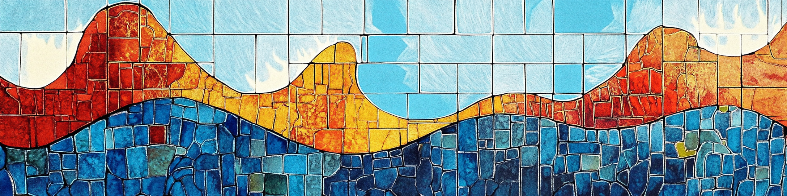

Lectures for Statistical Theory and Modelling, 7.5 hp

This page contains a short description of the contents, reading instructions and additional material for each lecture.
Schedule
The course schedule can be found on TimeEdit.
Literature
The MSA listed below are section numbers from the course book Wackerley, Mendenhall and Scheaffer (2021). Mathematical Statistics with Applications, 7th edition, Cengage.
The BLprequel listed below are section numbers from a book Bayesian Learning - the prequel that I have started writing for this course.
Lecture contents
Preparatory - Basic maths (math check/self-study)
This is not a lecture, but check that you remember this prerequisite high school maths, or otherwise freshen it up at the start of the course.
Read: BLprequel 1.1-1.7.
Lecture 1 - Differentiation
Read: BLprequel 1.8-1.14 | Slides
Notebooks and widgets: Exponential function | Logarithms | Derivatives
Lecture 2 - Optimization. Integration.
Read: BLprequel 1.16 | Notebook on function optimization | Slides
Widgets: Integrals | Common functions and their derivatives
Lecture 3 - Discrete random variables.
Read: If needed, refresh basic probability in Ch. 12-13 in the SDA1 course book MSA 3.1-3.6, 3.8, 3.11 | Slides
Widgets: Bernoulli | Binomial | Geometric | Poisson | Negative binomial | Chebychev’s inequality
Extras: List with 50+ statistical distribution widgets
Lecture 4 - Continuous random variables.
Read: MSA 4.1-4.8, 4.10 | Slides
Widgets: Normal | Exponential | Beta | Student-t | Gamma
Extras: List with 50+ statistical distribution widgets
Lecture 5 - Joint and conditional distributions. Covariance and correlation. Bayes theorem.
Read: MSA 5.1-5.8, 5.11 | BLPrequel 1.16 (double integrals) | Slides
Lecture 6 - Transformation of random variables. Monte Carlo simulation. Law of large numbers. Central limit theorem.
Read: MSA 6.1-6.4, 7.3 | Law of large numbers notebook | central limit theorem notebook | Slides
Widgets: Law of large numbers | central limit theorem
{kind=link}
Lecture 7 - Point estimation. Maximum likelihood. Sampling distributions.
Read: MSA 9.1-9.2, 9.3 (pages 448-451), 9.4, 9.7 | Slides
Widgets: Sampling distribution and Likelihood | ML - Bernoulli data | ML - Poisson data
Lecture 8 - Vectors and matrices. Multivariate normal distribution. Linear regression in vector form.
Read: MSA A1.1-A1.7, 5.10, 11.10-11.11 | Slides
Widgets: Bivariate normal distribution
Lecture 9 - Observed and Fisher information. Numerical optimization.
Read: X | Slides | tutorial on numerical ML
Widgets: Second derivative as function curvature
Lecture 10 - Logistic, Poisson regression and beyond.
Read: X | Slides
Lecture 11 - Nonlinear regression. Regularization.
Read: X | Slides
Code:
Data:
Lecture 12 - Time series. Autocorrelation function. Autoregressive models.
Read: X | Slides
Code:
Data:
Lecture 13 - Course summary and example exam.
Read: X | Slides
Code:
Data: